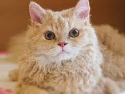

|  |
| American Curl Koster |
BEHAVIOR
American Curls are friendly, affectionate, and docile cats that love to bond with their owners. Despite their affections, however, American Curls aren't quite cuddlers—they're happy just to sit next to their owner and relax, or play with their toys. Because American Curls are highly adaptable, they're suitable for a number of different home types, and homes with other pets or children.
It's important to note, however, that American Curls don't like to be left alone for too long—so you might have to consider whether or not your schedule can accommodate several hours of attention and playtime each day.
GROOMING
The frequency with which you groom your American Curl depends on his or her coat length. If your American Curl is short-haired, you can expect to groom his or her coat weekly, in order to keep it healthy and shiny. If your American Curl is long-haired, grooming should be increased to twice weekly, in order to remove any tangles, mats, or debris from the coat.
Like many cats, the American Curl is susceptible to ear issues. Be sure to check your Curl's ears weekly, and gently remove any dirt or debris with a dampened cloth or cotton round. Avoid using cotton swabs, as they can cause severe damage to your Curl's delicate inner-ear structures. If your Curl's ears are very dirty, red, inflamed, or smell funny, make an appointment with your vet as soon as possible. These symptoms may indicate infection or injury.
Regular dental hygiene can help protect your Curl from periodontal disease, so aim to brush his or her teeth several times per week. Daily brushing is ideal, but regular maintenance can support proper dental health. You can supplement brushing with plaque-removing treats, but give them to your Curl in moderation—they're packed with additional calories and are meant only to support a regular dental hygiene routine.
The American Curl is intelligent and needs adequate exercise, so choose games that will challenge his or her mental and physical abilities. Try puzzles designed specifically for cats or games like hide and seek. Many Curls are also happy to play fetch with a small toy or rolled up piece of paper. The American Curl requires several hours of attention each day, so it's important to make sure your family's schedule can accommodate proper playtime before bringing a Curl into the family.
HEALTH PROBLEMS
American Curls are generally healthy and aren't predisposed to any specific genetic disorders. It's important to remember, however, that both pedigreed and mixed breed cats aren't 100 percent protected from developing certain health conditions during their lifetime.
Due to the unique shape of the American Curl's ears, some may be born with narrowed ear canals. These narrowed canals can trap wax, which can lead to ongoing ear infections. Be sure to examine your Curl's ears every week to prevent or identify any ear or inner-ear issues. If you're concerned about the health of your Curl's ears, call your veterinarian for advice.
NUTRITION
Like all breeds, the American Curl may be susceptible to obesity or heart disease if he or she isn't properly exercised and fed a high-quality, high-protein diet. The amount of food your Curl eats each day depends largely on his or her age, sex, and activity levels, but talk to your vet if you're not sure how much you should feed your cat. Remember to give your Curl treats in moderation.